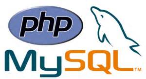

By PankJes
Awesome HTML Presentation
Demonstration by Pank Jes / @pankjes007
About Me
Web Developer | Web Designer | Student Leader (ISP) | Speaker | Performance Coach.
I like to work on following technologies :

down.
HTML5
All time Favourite Front End Technology
PHP + MySQL
For MVC application my preference is PHP+MySQL because of wide variety of frameworks available.
For A Awesome MVC based Application with HTML5
Use Yii Framework + Boastrap And above both
Some Awesome Presentation Contect
- Themes
- Fragmented View
- Fragment Styles
- Or here
Themes
Themes for HTML Presentation
Default -
Sky -
Beige -
Simple -
Serif -
Night
Moon -
Solarized
Fragmented Views
Hit the next arrow...
... to step through ...
any type- of view
- fragments
Fragment Styles
There's a few styles of fragments, like:
grow
shrink
roll-in
fade-out
highlight-red
highlight-green
highlight-blue
current-visible
highlight-current-blue